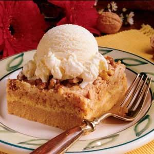

Great Pumpkin Dessert

Description
Prep Time:
15 mins
Cook Time:
1 hrs
Total Time:
1 hrs 15 mins
Servings:
24
Yield:
24 squares
Ingredients
- 1 (15 ounce) can pumpkin purée
- 1 (12 fluid ounce) can evaporated milk
- 1 cup white sugar
- 3 large eggs
- 4 teaspoons pumpkin pie spice
- 1 (15.25 ounce) package yellow cake mix
- ¾ cup unsalted butter, melted
- 1 ½ cups chopped walnuts
Steps
- Preheat the oven to 350 degrees F (175 degrees C). Grease a 9x13-inch baking dish.
- Mix pumpkin purée, evaporated milk, sugar, eggs, and pumpkin pie spice together in a bowl until well combined; pour into the prepared dish. Sprinkle cake mix over top, then drizzle with melted butter and top with walnuts.
- Bake in the preheated oven until a knife inserted near the center comes out clean, about 1 hour. Let cool completely before cutting into 24 squares.
Click here to go back to homepage.